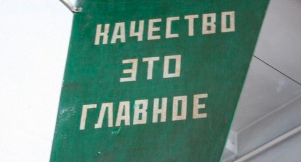
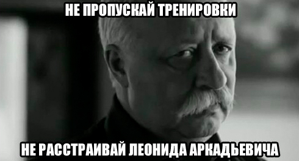

ВНИМАНИЕ!
!!! СЕГОДНЯ ДОБАВЛЯЕМ ОДИН КРУГ !!!
Очередные 7 дней нашей обучающей программы SOTKA остались позади, но с тобой навсегда останутся знания о том, как правильно выполнять упражнения и дышать при этом, с какой скоростью стоит делать повторения, а также в какое время лучше тренироваться и что нужно учитывать при тренировках на улице в холод и жару. Начинается новая тренировочная неделя, и сегодня мы поговорим о двух принципах, без которых невозможно достичь успеха ни в одном деле! Эти два принципа - качество выполнения упражнений и регулярность тренировок.
Качество выполнения упражнений

Всегда фокусируйтесь на качестве исполнения, а не на количестве повторений! Есть такая поговорка: "Don't count the rep, make every rep count!", что примерно переводится как: "Не гонитесь за количеством повторений, а выжимайте максимум из каждого повторения!" И вот три совета, которые вам помогут это сделать.
1. Во время упражнения нужно думать только о процессе выполнения этого упражнения. Не о том, сколько осталось повторений, не том, сколько осталось кругов. Тем более не о том, что будет после тренировки или какие дела ещё нужно сегодня сделать. Когда ты тренируешься - ты тренируешься! Относиться к этому процессу нужно как к своего рода медитации и уделять ему должное внимание! Это не только повысит эффективность и снизит вероятность получения травм, но и принесёт душевный покой, потому что позволит некоторое время уйти от проблем и забот современного мира и погрузиться в свой собственный мир самосовершенствования!
2. Было бы неплохо снимать на видео процесс выполнения упражнений. Взгляд со стороны позволит более объективно оценить технику и допускаемые ошибки.
3. Не нужно сильно расстраиваться, если поначалу техника неидеальна и есть огрехи (например, при отжиманиях от пола провисает таз). У новичков подобные недочеты могут быть связаны просто-напросто с тем, что мышцы ещё не привыкли к этому упражнению! С другой стороны, у опытных спортсменов недостатки в технике могут быть обусловлены именно тем, что до этого они в течение многих тренировок выполняли упражнение неправильно и привыкли его так выполнять.
О том, чем отличается простое выполнение повторений от осмысленных мы ещё поговорим в одном из будущих инфопостов. Ну а сейчас переходим к второму важному принципу.
Регулярность тренировок

Не хотим никого расстраивать, но только благодаря регулярным тренировкам можно чего-то добиться. Чтобы наглядно проиллюстрировать эту идею, можно представить, что желаемый результат — это кирпичный дом. Вряд ли удастся в один день взять и с нуля построить хороший дом целиком, а если даже попробовать, то, скорее, надорвешься, чем добьёшься успеха. Но если регулярно, изо дня в день работать над строительством своего дома — кирпичик за кирпичиком, то со временем он будет успешно построен! Тренировки — и есть те самые кирпичики, из которых строится желаемый результат, и поэтому, если не тренироваться регулярно, то и дом сам собой не построится, то есть результата не будет!
Кроме того, многие нюансы техники выполнения упражнений вообще невозможно прочувствовать, если не выполнять упражнения регулярно! И наоборот, чем больше тренировочного опыта, тем лучше понимание своего тела и того, как оно работает. А это позволяет постепенно исправлять огрехи в технике делая акцент на тех или иных моментах, учиться чувствовать и включать в работу определенные группы мышц, которые раньше и не замечались. И рано или поздно, в зависимости от усердия, результат, о котором сейчас приходится только мечтать, будет достигнут! Именно благодаря планомерной работе, которая шаг за шагом привела к цели!
Пара слов вместо заключения
Бывают моменты, когда сложно сосредоточиться на выполнении упражнений, и это просто значит, что сейчас не лучший момент для тренировки. Бывают дни, когда совершенно нет времени тренироваться, но это значит лишь только, что очередной кирпичик вы положите завтра. В долгосрочной перспективе эти маленькие перерывы ничего не решают. Даже если в пустыне Сахара время от времени идёт дождь, то она всё равно остаётся пустыней, потому что всё остальное время там дождя нет! Поэтому если регулярно тренироваться и внимательно следить за качеством выполнения упражнений, то всё будет отлично, и цели будут достигнуты!